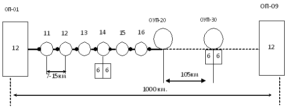
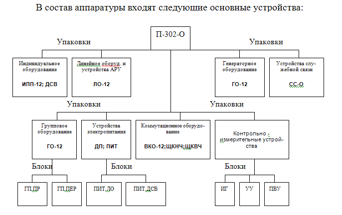
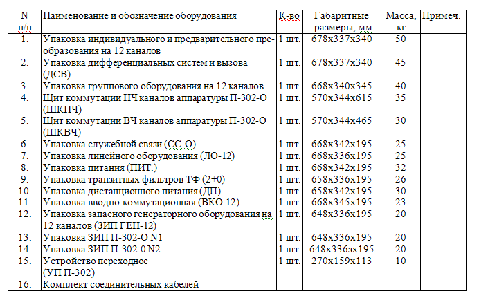
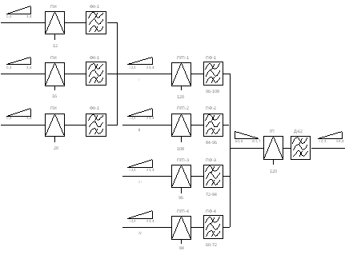
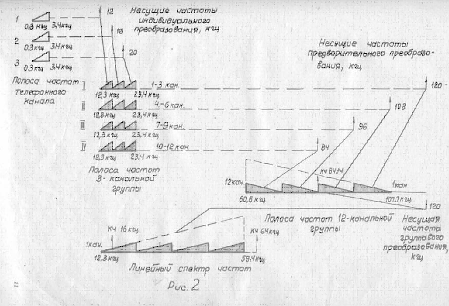
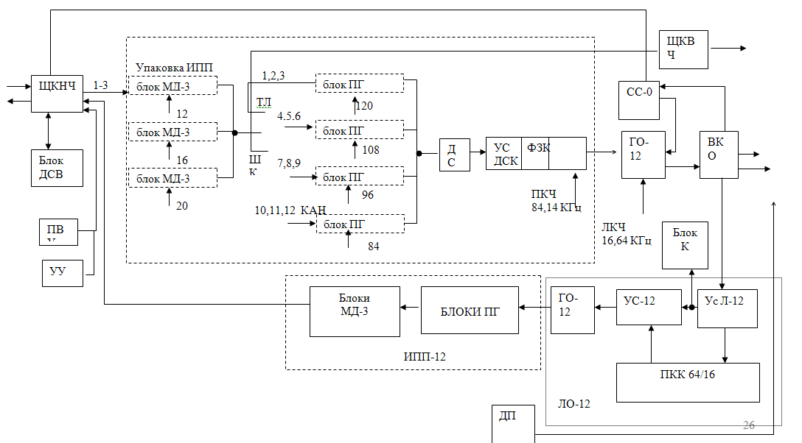

Тема №3. Устройство и эксплуатация систем передачи с частотным разделением каналов
Занятие №6. Аппаратура каналообразования П-302-О.
Учебные вопросы:
Литература:
- Многоканальные системы передачи, Ч.1. Теоретические основы построения МСП. – Мн.: БГУИР, 2010.
- Многоканальные системы передачи (часть 2). Учебно-методическое пособие «Аппаратура МКСП с ЧРК». – Мн.: БГУИР, 2010.
- Учебно-наглядное пособие «Альбом схем аппаратуры МКСП». – Мн.: БГУИР, 2010.
- Аппаратура П-302 (учебное пособие). – Орел: ОВВУС, 1979.
- Кирилов В.И. Учебное пособие «Многоканальные системы передачи»: – М.: Новое знание, 2003.
1. Назначение, состав, технические характеристики, режимы работы ап-паратуры П-302-О.
Военно-полевая 12-ти канальная система передачи с частотным разде-лением каналов предназначена для работы по полевым кабельным, радиоре-лейным и тропосферным линиям связи.
Система П-302 является одно кабельной четырехпроводной и обеспечи-вает макси¬мальную дальность связи до 1000 км.
Структура ПКЛ-296/302 без ПП пунктов.
Возможности:
На однокабельной ПКЛ-296/302 система обеспечивает:
- oбразование 12 каналов ТЧ;
- образование 2-х каналов ШК-12 и 6-и каналов ТЧ;
- oбразование канала служебной связи в спектре 0,3-1,8 кГц для обеспечения ГГС в пределах переприемного участка.
- Дальность связи на ПКЛ до 1000 км, при этом длины усилитель-ных участков составляют 7-15 км, а секции дистанционного питания – до 105 км.
На любом НУП и ОУП с помощью аппаратуры П-302-В может быть выделено по 6 каналов ТЧ и по одному каналу ШК-12 в обоих направлениях. На переприемном пункте могут быть выделены все 12 каналов ТЧ и до 2-х каналов ШК-12 в обоих направлениях.
Для любого канала по ПКЛ допускается не более пяти переприемов, из них по ТЧ не более четырех.
На двухкабельной ПКЛ-296/300 система П-302 обеспечивает дальность связи до 850 км, при этом длины усилительных участков составляют 5-10,5 км, а секций регулирования – до 50 км.
Система П-302 может быть использована для работы по кабелю П-270. При этом все промежуточные усилители должны быть обслуживаемыми, а длины усилительных участков – 10-20 км.
Оконечная аппаратура П-302-0 обеспечивает:
- получение двенадцати телефонных каналов с эффективно переда-ваемой полосой частот 0,8 - 3,4 кгц;
- получение двух широких каналов с полосой частот 12 кгц (ШК-12) вместо лю¬бых двух 3-канальных групп-,
- образование канала широкого вещания (ШВ), вместо второй 3— канальной группы;
- передачу трактов 60-108 кгц для сопряжения с другими системами;
- передачу сигналов тонального телеграфирования, фототелеграфной связи и коди¬рованной информации по 75% телефонных и широких каналов при условии средней загрузки на телефонный канал не более 135 мквт.
Аппаратура позволяет организовать 4-проводный канал громкоговоря-щей служеб¬ной связи по магистрали.
Состав аппаратуры.
Основное оборудование аппаратуры размещено в отдельных упаковках и щитах, соединенных кабелями, оканчивающимися с обеих сторон 30-контактными ножевыми ко¬лодками или вставками типа РМ.
Вспомогательное оборудование включает в себя упаковку запасного ге-нератор¬ного оборудования на 12 каналов (ЗИП ГЕН-12), упаковку запасного преобразовательно¬го оборудования (ЗИП П-302-0 №1 ), упаковку ЗИП П-302-0 № 2 с комплектом запас¬ных частей и инструмента, а также переходное устройство (УП П-302) для подключе¬ния аппаратуры к кабелю П— 270 при ее работе по магистрали П-270/304.
Оборудование аппаратуры П-302-0 рассчитано на размещение в ста-ционарных помещениях и в аппаратных машинах нескольких типов.
В зависимости от размещения аппаратуры в той или иной аппаратной предус¬мотрены следующие варианты ее комплектации:
- для размещения в аппаратной П-257-24В;
- для размещения в аппаратной П-257-12К (комплект N1);
- для размещения в аппаратной П-257-12К (комплект N2);
- для размещения в аппаратной П-257-24К;
- для размещения в аппаратной П-257-60К;
- для стационарного варианта.
Состав основного оборудования:
- П-302-О – единая для ПКЛ, РРЛ, ТРЛ каналообразующая аппара-тура;
- П-302-П – аппаратура обслуживаемых усилительных пунктов (ОУП) на ПКЛ;
- П-301-НУП – унифицированный необслуживаемый усилитель для систем П-301 и П-302;
- П-302-В – аппаратура выделения каналов на НУП и ОУП.
Аппаратура П-302-О состоит из отдельных упаковок и щитов коммута-ции. Упаковки, в свою очередь состоят из отдельных блоков. Упаковки и щи-ты скрепляются друг с другом в виде стоек. Электрическое соединение упа-ковок и щитов между собой осуществляется с помощью соединительных ка-белей.
 
Индивидуальное оборудование предназначено для преобразова-ния сигналов, поступающих во все 12 каналов ТЧ, в первичную 12-ти каналь-ную группу 60-108 кГц при передаче, для обратного преобразования при приеме, а также для передачи и приема вызывного сигнала по каналам ТЧ.
Групповое оборудование размещенное в упаковке ГО-12 предна-значено для преобразования сигналов первичной 12-ти канальной группы в линейный спектр 12-60 кГц при передаче и обратного преобразования при приеме.
Линейное оборудование предназначено для усиления приходящих с линии сигналов и компенсации вносимых линией амплитудно-частотных искажений.
Устройства АРУ обеспечивают автоматическую регулировку уровня сигнала при температурных изменениях затухания кабеля.
Генераторное оборудование предназначено для формирования всех несущих и контрольных частот, необходимых для работы аппаратуры.
Коммутационное оборудование служит для контроля и коммута-ции каналов, соединительных линий и линейного кабеля ПКЛ и имеет в сво-ем составе вводно-коммутационную упаковку ВКО-12 и щиты коммута-ции ЩКНЧ и ЩКВЧ.
К контрольно-измерительным устройствам относятся переговор-но-вызывные устройства (ПВУ), измерительный генератор и измеритель (указатель) уровня, входящие в состав ЩКНЧ.
ПВУ служат для проверки прохождения и вызова по каналам ТЧ и со-единительным линиям и для ведения служебных переговоров по ним.
Генератор и измеритель уровня предназначены для проведения различных измерений при подготовке аппаратуры к работе, ее настройке и отыскании неисправностей.
Для дистанционного питания НУП имеется упаковка ДП, рассчи-танная на питание до трех НУП.
Устройства служебной связи обеспечивают громкоговорящую служебную связь оконечного пункта с усилительными пунктами линии, в пределах переприемного участка.
Общая масса аппаратуры П-302-О с комплектом соединительных кабелей составляет 490 кг.
Использование каналов:
- Kаналы ТЧ в любом количестве могут быть использованы для от-крытой и засекреченной телефонной связи;
- В любые 9 каналов ТЧ из 12 можно включить многоканальную аппаратуру тонального телеграфирования;
- В любое число каналов ТЧ можно включить одноканальную аппа-ратуру тонального телеграфирования при сохранении телефонной связи по каналам ТЧ;
- Широкополосные каналы ШК-12 предназначены для передачи данных и других широкополосных сигналов;
- Предгрупповые и групповой тракты могут использоваться для транзитных соединений по 3-х канальным и 12-ти канальным группам.
Электропитание аппаратуры:
Для питания аппаратуры П-302-О, П-302-П и П-302-В используется од-нофазный переменный ток частотой 50 Гц и напряжением 220В. Предусмот-рено аварийное питание устройств служебной связи от источника постоянного тока напряжением 22В.
Электропитание НУП – дистанционное с ближайшего ОУП или ОП по-стоянным током 115мА
Технические данные аппаратуры
Линейный спектр частот, занимаемый аппаратурой, 12,3-59,4 кГц. Входное сопротивление линейных трактов 135 Ом. Измерительный уровень передачи на выходе линейного тракта -0,1 Нп, на входе 2,93 Нп (на часто-те 12 кГц) и -3,94 (на частоте 60 кГц) для lмах=15 км.
Линейное оборудование тракта приема аппаратуры П-302-О обеспечи-вает компенсацию затухания и коррекцию амплитудно¬-частотных ис-кажений участка кабеля длиною от 0 до 15 км в рабочем диапазоне частот.
Для контроля за состоянием магистрали в аппаратуре предусмотрены контрольные частоты 64 и 16 кГц.
Устройства автоматической регулировки усиления (АРУ) обеспечивают поддержание уровня тока контрольных частот с точностью не хуже +0,07 Нп относительно номинального при изменении уровней на входе аппаратуры не более , чем на:
- +0,9 Нп для контрольной частоты 64 кГц;
- +0,3 Нп для контрольной частоты 16 кГц.
С помощью контрольной частоты 64 кГц устройства АРУ осуществля-ют плоскую регулировку усиления, с помощью частоты 16 кГц - наклонную.
Аппаратура обеспечивает один из следующих видов служебной связи в зависимости от режима работы:
- громкоговорящую двухстороннюю связь между оконечными станциями и обслуживаемыми усилительными пунктами (ОУП) в пределах одного переприемного участка. Эта связь организуется по НЧ каналу с шири-ной полосы частот от 300 до 2000 Гц по 4-проводной схеме.Вызов каждого пункта осуществляется голосом;
- громкоговорящую двухстороннюю связь оконечной аппаратуры с ближайшим ОУП и НУП в пределах секции регулирования. Вызов с соседне-го ОУП осуществляется голосом, вызов НУП - током тональной частоты 900 Гц.
В аппаратуре предусмотрен телеконтроль за состоянием шести НУП в пределах прилегающего усилительного участка в одном направлении переда-чи. Вторым направлением можно контролировать НУП любой другой аппа-ратуры.
Каждый телефонный канал аппаратуры П-302-О может быть в следую-щих режимах работы:
- 2-проводном оконечном;
- 2-проводном транзитном;
- 4-проводном оконечном;
- 4-проводном транзитном.
При любом режиме работы обеспечивается передача каналов на кросс узла связи по соединительным линиям. Эффективно-передаваемая полоса частот канала 300-3400 Гц.
Режимы работы аппаратуры и каналов
Режимы работы аппаратуры
Аппаратура П-302-О может работать в 1 и 2-кабельном режимах. Ос-новным является 1-кабельный режим работы.
В 2-кабельном режиме аппаратуры П-302-О может работать на магист-рали только совместно с аппаратурой П-300-0, т.к. имеет возможность под-ключения одного магистрального кабеля. При этом аппаратура П-302-0 может быть в режиме станции А или станции Б.
При работе аппаратуры в режиме станции А тракт передачи П-302-0 отключается от упаковки ВКО-12 и подается на упаковку ВКО-24/60 аппаратуры П-300-0, а вместо тракта передачи аппаратуры П-302-0 от упаковки ВКО-24/60 вводится тракт приема аппаратуры П-300-0. Таким образом, в режиме А в П-302 по входным цепям упаковки ВКО-12 проходят тракты приема аппаратур П-302-0 и П-300-0, работающих совместно. Тракт приема аппаратуры П-302-0 оканчивается контактами вводного разьема ее линейного оборудования на щите упаковки ВКО-12, а тракт приема другой аппаратуры - контакта¬ми передачи той же упаковки.
При работе в режиме станции Б также используется ВКО-12,но тракт передачи аппаратуры П-300-0 вводится в упаковку ВКО-12 вместо тракта приема аппаратуры П-302-0, который в свою очередь, подается на упаковку ВКО-24/60. В режиме станции Б по входным цепям упаковки ВКО-12 аппа-ратуры П-302-0 проходят тракты передачи аппаратур П-302-0 и П-300-0, ра-ботающих совместно. Тракт передачи аппаратуры П-302-0 оканчивается кон-тактами своего вводного разьема упаковки ВКО-12, а тракт передачи П-300 - на ней же.
При переходе с 1-кабельного на 2-кабельный режим работы аппаратуры четырехконтактные перемычки под общей гравировкой «СЛУЖЕБНАЯ СВЯЗЬ» переставляются из положения «1-КАБ.» в положение «2-КАБ.». При этом тракты передачи и приема канала служебной связи аппаратуры П-302-0 меняются местами. Такое переключение необходимо для того, чтобы обеспе-чить в 2-кабельном режиме согласное включение трактов ВЧ приема и пере-дачи с трактами приема и передачи канала служебной связи для аппаратуры П-300-0.
Аппаратура П-302-0 может работать в режиме оконечной станции магистрали П-270/304. Для подключения аппаратуры П-302-0 к магистрали П-270/304 служит переходное устройство УП П-302, которое присоединяется к упаковке ВКО-12 отрезком кабеля П-296. УП П-302 представляет собой два линейных тракта, в каждом из которых включены согласовывающий трансфор-матор и полузвено пупинизации, при этом средние точки как станционной, так и линейной обмоток трансформаторов выведены на коммутационную планку. К выходной полумуфте УП П-302 с гравировкой «П-304» подключается кабель П-270. Для обеспечения питания НУП магистрали П-270/304 на упаковке ДП аппаратуры П-302-О устанавливается режим питания «П-304». На УП П-302 при этом соединяются между собой с помощью перепайки средней точки станционной и линейной обмоток каждого согласовывающего трансформатора.
Ввиду того, что в системе П-270/304 предусмотрена лишь плоская ав-томатическая регулировка усиления с помощью контрольной частоты 16 кГц, в аппаратуре П-302-0 приемник контрольного канала ПКК-16 должен быть включен вместо ПКК-64, а устройства АРУ усилителя Ус-12 должны быть выключены. Поскольку частотная характеристика усилительного участка магистрали П-270/304 отличается от П-302 на упаковке ЛО-12 искусственные линии должны включаться из рассчета 8 км на 20 км длины усилительного участка.
Режимы и транзитные соединения каналов
В аппаратуре предусмотрены 4 и 2-проводный оконечный и тран-зитный режимы телефонных каналов.
При оконечном 4-проводном режиме перемычки на ШКНЧ устанавли-ваются в положение «ОК».
При 2-проводном режиме подключение дифференциальных систем к трактам канала производится шнурами. Перемычки на упаковке ДСВ при 2-проводном оконечном режиме устанавливаются в положение «ОК».
При 4-проводном транзитном режиме на входе тракта передачи канала включается удлинитель 2,0 Нп и на кросс подаются тракты с уровнями сиг-нала по передаче и приему +0,5 Нп. 4-проводный транзитный режим образу-ется установкой перемычки П2И в гнездах «ТР.УДЛ.» канала в положение «ТР». При непосредственном транзитном соединении каналов двух аппара-тур (без кросса) имеется возможность перекрестить транзитно соединяемые тракты каналов. Для этого на одной из аппаратур перемычку из положения «ОК» необходимо переставить в положение «ТР.(х)».
При 2-проводном транзитном режиме из тракта выключается удлини-тель 0,4 Нп (перемычка на упаковке ДСВ устанавливается в положение «ТР.»). Уровни сигнала в сторону приема и передачи равны 0,4 Нп.
В аппаратуре предусмотрено образование широкого канала с полосой частот 12,3-23,4 кГц (ШК-12). Широкий канал образуется путем отключения каналообразующего оборудования на три канала (блок МД-3) в точке с изме-рительным уровнем -4,0 Нп в тракте передачи и -1,6 Нп в тракте приема и подключением к тракту приема и передачи 3-канальной группы полосовых полутранзитных фильтров ФПТ 12-24 пр. и ФПТ 12-24 пер.
В аппаратуре предусмотрено введение канала широкого вещания (ШВ) вместо второй 3-канальной группы, в диапазоне частот 84-96 кГц. Гнезда «ИЗМ» оканчиваются разьемом «ИЗМ.1-2» для подключения кабеля П-296.
В аппаратуре имеется возможность переключения групповых трактов 60-108 кГц вместо упаковки ИПП-12 на вводный разьем для подключения кабеля П-296. Это необходимо для осуществления транзитного соединения по группе 60-108 кГц. При этом предусматривается, что транзитное оборудование находится вне аппаратуры П-302-0. Тот же вводный разьем используется для сопряжения с другими аппаратурами уплотнения. Из-за различия уровней передачи и приема 12-канальных групп аппаратуры П-303-0 (-4,5 Нп и -0,6 Нп соответственно) и других аппаратур уплотнения (-4,1 Нп или -4,2 Нп и -2,6 Нп или -3,5 Нп) в сопрягающиеся тракты включаются согласующие устройства (СУ) путем перепаек на платах с удлинителями, расположенных на внутренней стороне коммутационного поля щита ЩКВЧ.
Вызов по телефонным каналам
Вызов по телефонным каналам осуществляется током частотой 2100 Гц. При поступлении со стороны кросса узла связи вызывного тока частотой в пре-делах от 16 до 50 ГЦ) срабатывает приемник индукторного вызова (ПИВ), включенный в 2-проводный тракт телефонного канала. В результате срабаты-вания ПИВ с помощью реле в тракт передачи канала включается генератор тонального вызова ГТВ и подается ток с частотой 2100 Гц и уровнем -2,2 Нп(на 0,7 Нп ниже измерительного уровня сигнала). Прохождение вызывного тока по каналу аналогично прохождению сигнала телефонной передачи.
На противоположной станции с выхода усилителя УНЧ вызывной ток попадает на приемник тонального вызова ПТВ, постоянно включенный в тракт приема канала и настроенный на частоту 2100 Гц. Реле ПТВ срабатывает, в результате чего в 2-проводный тракт в сторону кросса подается вызывной ток частотой 50 Гц. В аппаратуре (в упаковке ДСВ) имеется один генератор ГТВ и один источник вызывного тока.
Служебная связь
Для связи оконечной аппаратуры с обслуживаемыми усилительными пунктами (ОУП) в пределах переприемного участка магистрали системы П-302 или с НУП в пределах прилегающей секции регулирования в аппаратуре предусматривается канал двухсторонней громкоговорящей служебной связи. К каналу служебной связи может быть подключена 2-проводная линия вынесенного абонента (ВА).
Оборудование канала служебной связи сосредоточено в блоке СС-0 од-ноименной упаковки.
Канал служебной связи (тракты передачи и приема) образуется на двух парах одного кабеля П-296 посредством фильтров ДК-2-0I, разделяющих по-лосы частот линейных трактов аппаратуры и канала служебной связи. Вызов противоположной оконечной аппаратуры, ОУП и абонента ВА производится голосом, вызов НУП - посылкой тока частотой 900+135 Гц.
Электропитание и сигнализация
Питание аппаратуры
Питание аппаратуры П-302-0 осуществляется от следующих источни-ков выпрямленного тока:
- выпрямителя в упаковке питания ПИТ.;
- выпрямителя в блоке питания ПИТ.ДСВ упаковки ДСВ;
- выпрямителя в блоке питания ПИТ.ЛО упаковки СС-О.
Для дистанционного питания НУП кабельной магистрали в аппаратуре имеется питающее выпрямительное устройство, расположенное в отдельной упаковке дистанционного питания (ДП). Питающее устройство расчитано на питание трех НУП. Упаковка ДП обеспечивает подачу в кабельную маги-сталь стабилизированного постоянного тока величиной 40 мА (режим «П-304») или 115 мА (режим «П-300, 301, 302») с пульсацией напряжения не превышающей 0,5 В.
Рабочее напряжение дистанционного питания на выходе в линию со-ставляет от 65 до 370 В в зависимости от числа включенных НУП и длины усилительных участков.
Все перечисленные питающие устройства работают от переменного тока напряжением 220 В и частотой 50 Гц, который подается от внешнего источника через блок распределения питания. При этом цепь переменного напряжения ( 220 В) подается по отдельному соеди-нительному кабелю на упаковку ПИТ для питания выпрямителя. С упаковки ПИТ. отдельным кабелем цепь 220 В подается на упаковку СС-0, с упаковки СС-0 на упаковку ДП . Выпрямленное напряжение 19 В с упаковки ПИТ. подается по соединительному кабелю на упаковку ГО-12, а от нее на упаковку ИПП-12. С упаковки ПИТ. напряжение 19 В подается также на щит ЩКНЧ П-302-0 для питания блоков ПВУ и УУ. Выпрямленное напряжение 22 В с упаковки СС-0 подается по соединительному кабелю на упаковки ЛО-12 и ВКО-12.
Аппаратура на рассчитана на резервное питание от источника постоян-ного тока, за исключением устройств служебной связи магистрали, располо-женных в блоке СС-0 одноименной упаковки. Резервное питание этих устройств в случае аварии (отсутствие переменного напряжения 220 В) может обеспечиваться от аккумуляторной батареи напряжением 12 В, включенной через преобразователь постоянного напряжения ПНС-12/22, который повы-шает напряжение до 22 В.
Преобразователь ПНС-12/22 в состав аппаратуры П-302-0 не входит. Переключение с цепи основного источника ( выпрямителя блока ПИТ.ЛО, находящегося в упаковке СС-0) на резервный производится автоматически. Резервное питание устройств КСС предусмотрено с целью обеспечения возможности ведения служебных переговоров по магистрали при выходе из строя оконечной аппаратуры вследствие пропадания переменного напряжения 220 В, подаваемого от электростанции.
Для установки режимов питания блока СС-0 с обособленным резервным питанием или без него, на блоке имеется тумблер «ПИТ.» на два положения: «МЕСТ.» в «ВН.».
Сигнализация
Устройства общей (звуковой и оптической) и местной (оптической) сигнализации аппаратуры П-302-0 обеспечивают оповещение обслужи-ваюего персонала о следующих видах неисправностей:
- пропадание напряжения источников питания и перегорание рас-пределительных предохранителей;
- пропадание уровней несущих и контрольных частот на выходе ге-нераторного оборудования;
- перегрев термостата;
- неисправность системы дистанционного питания;
- пропадание линейных контрольных частот и нарушения работы устройств АРУ.
В случае возникновения неисправности любого вида, кроме местной сигнализации, указывающей характер неисправности с помощью сигнальной лампы с соответствующей гравировкой, работают устройства общей сигнализации (ОС): звенит звонок и горит общесигнальная лампа «ВА» на щите ЩКНЧ.
Предусмотрено выключение звонка нажатием кнопки «ВЫКЛ.ЗВ.». При этом лампа «АВ» горит до устранения неисправности. Устройства общей сигнализации обеспечивают также повторную работу звонка при возникновении еще одной неисправности тогда, когда предыдущая неис-правность еще не устранена. Это возможно только в том случае, если появившаяся неисправность другого вида.
Особенностью построения схемы генераторного оборудования является то, что ряд частот получается непосредствденно от общих узлов (ДЧ;ГГ), а часть - от других частот путем преобразования.
Схема сигнализации неисправностей в генераторном оборудовании по-строена таким образом, что сигнал аварии появляется лишь в том блоке, в ко-тором фактически произошло повреждение.
Исключениями являются:
- пропадание уровня на выходе задающего генератора, при этом го-рят лампы «ЧЕТ.» и «НЕЧЕТ.» в блоке КЧ-84,14 и лампа «12» в блоке ИНЧ 12;20;
- пропадание уровня на выходе нечетных гармоник генератора гар-моник. В этом случае горят лампы «НЕЧЕТ.» в блоке КЧ-84,14 и лампа «64» в блоке КЧ-64; ГНЧ-120;
- пропадание уровня на выходе усилителя 84 кГц, при этом горят лампы «84» на ГНЧ-84; 108 и «64» на блоке КЧ-64; ГНЧ-120-1.
Местная и общая сигнализация оповещает о следующих неисправно-стях в упаковке ДП:
- увеличение тока ДП на 14-21 мА и более;
- обрыв цепи ДП,
- перегорание предохранителей в цепи переменного напряжения 220 В.
В результате загорается лампа «АВ», гаснут неоновые лампы и лампа с гравировкой «ДП ВКЛ.», работает ОС на ЩКНЧ.
Резкое изменение уровня линейных контрольных частот 16 и 64 кГц, а также полное их пропадание вызывает срабатывание реле блокировки, кото-рые расположены в приемниках ПКК-16 и ПКК-64 блока ПКК-64/16 упаков-ки ЛО-12 - звенит звонок и горят лампы аварии.
Также при исчерпании пределов регулировки АРУ срабатывает реле сигнализации и включает сигнальную лампу «ПРЕД.» упаковки ЛО-12.
Система местной (блочной и приборной ) сигнализации также трансли-рует сигналы об отказах и авариях на станционное табло световой и звуковой сигнализации.
Электрические параметры системы П-302.
Система передачи П-302 является однополосной, четырехпроводной однокабельной и имеет следующие параметры:
- линейный спектр 12-60 кГц;
- сопротивление нагрузок с линейной стороны 135 Ом;
- относительный уровень сигнала на линейном выходе аппаратуры оди-наков для всех каналов ТЧ и составляет –0,1 Нп по мощности;
- контрольные частоты АРУ: 64 кГц и 16 кГц;
- уровень токов контрольных частот на 2 Нп ниже относительного уровня сигнала;
- частоты телеконтроля НУП: 3,0; 3,6; 4,2; 4,8; 5,4; 6,0 кГц.
Спектр сигналов на линейном выходе аппаратуры П-302-О.
Электрические параметры каналов ТЧ и ШК-12.
- эффективно передаваемая полоса частот (ЭППЧ) 0,3-3,4 кГц;
- остаточное затухание для различных режимов канала приведены в таблице:
| Режим работы канала ТЧ | Относительные уровни | Остаточное затухание, Нп | |
|---|---|---|---|
| Передачи | Приема | ||
| 2 Пр.Ок 2 Пр.Тр 4 Пр.Ок 4 Пр.Тр |
0 -0,4 -1,5 +0,5 |
0 -0,4 -1,5 +0,5 |
0,8 0 -2 0 |
- частотная характеристика канала ТЧ должна удовлетворять нормам, приведенным в таблице, или находиться в границах шаблона.
- амплитудная характеристика простого 4-х проводного канала ТЧ отклоняется от прямоугольной не более, чем на 0,035 Нп при повышении уровня на входе канала по отношению к относительному на 0,8 Нп.

Амплитудная характеристика канала ТЧ.
- частота тонального вызова 2100 Гц;
- сопротивление нагрузок канала во всех режимах 600 Ом.
Основные электрические параметры широкополосных каналов ШК-12:
- ЭППЧ 12,3-23,4 кГц, (что примерно равно 12-24 кГц);
- Относительные уровни сигналов а входе и выходе –2,8 Нп;
- Сопротивление нагрузок канала 600 Ом.
2. Схема частотных преобразований аппаратуры П-302-О.
Линейный спектр округленно 12-60 кГц двенадцатиканального сигнала формируется с помощью трех ступеней преобразования.
Индивидуальное преобразование производится с помощью несущих частот 12,16 и 20 кГц и использования верхней боковой полосы частот, в результате чего образуются четыре 3-х канальные предгруппы с полосой частот 12-24 кГц.
Предгрупповое преобразование производится с помощью несущих частот 84,96,108 и 120 кГц и использования нижней боковой полосы частот, в результате чего осуществляется перенос спектров четырех 3-х канальных предгрупп в спектр первичной 12-ти канальной группы с полосой частот 60-108 кГц.
Посредством третьей ступени преобразования (группового преобразования) с помощью несущей частоты 120 кГц и использования нижней боковой полосы частот групповой спектр 60-108 Кгц преобразуется в линейный спектр 12-60 кГц. При этом вновь имеет место инверсия спектра, в результате которой первый канал ТЧ занимает участок 12-16 кГц, а двенадцатый 56-60 кГц.
При приеме эти преобразования осуществляются в обратной последовательности.
Принцип формирования линейного спектра.
3. Структурная схема аппаратуры П-302-0.
а) Прохождение сигнала в тракте передачи в режимах 4ПР.ОК и 4ПР.ТР
Исходные данные:
- Кабель П-296 подключается к гнездам КАБ.ПЕР и КАБ.ПР (на ВКО-12 сзади).
- Соединительная линия от ТА подключается к гнездам ТЛФ.КАН.ПЕР и ПР (сзади ЩКНЧ).
Разговорный сигнал от 4-х проводного ТА поступает по СЛ на зажимы ТЛФ.КАН.ПЕР и далее с гнезд СЛ.ПЕР передается на гнезда ПЕР.КАН. Это соединение производится с помощью 8-ми контактных колодок.
Далее сигнал поступает на вход ТР.УДЛ. В режиме 4 ПР.ОК он выключается установкой перемычки в положение ОК, в режиме 4 ПР.ТР – включается установкой перемычки в положение ТР. В остальном прохождение сигнала в режимах 4 ПР.ОК и 4ПР.ТР по тракту передачи П-302-О идентично.
В блоке МД-3 производится формирование 3-х канальных предгрупп. На каждый из 3-х индивидуальных преобразователей подается своя fнес = 12,16 и 20 кГц. На выходе преобразователя выделяются верхние боковые полосы. Выходы ПФ запараллелены и следовательно на выходе каждого блока МД-3 образуется предгрупповой сигнал в ?f = 12-24 кГц.
Сформированные в блоках МД-3 сигналы четырех предгрупп поступают в блок предгруппового преобразования передачи ПГП.ПЕР и через гнезда ТФ со вставленными в них перемычками подаются на преобразователи ПГП. С помощью несущих частот 120, 108, 96 и 84 кГц эти сигналы преобразуются по частоте. Полосовые фильтры ФП-1, ФП-2, ФП-3, ФП-4 выделяют токи нижней боковой полосы частот:
I предгруппа – 96-108 кГц
II предгруппа – 84-96 кГц
III предгруппа – 72-84 кГц
IV предгруппа - 60-72 кГц
Выходы фильтров ФП-1 и ФП-3, а также ФП-2 и ФП-4 запараллелены и подключены к противоположным плечам дифсистемы ДС, которая служит для исключения взаимного влияния сигналов соседних по полосе частот.
Групповой усилитель УС 60-108 обеспечивает на выходе 12-ти канальной группы стандартный относительный уровень –5,25 Нп по напряжению,( -4,5 Нп по мощности.)
Заградительный фильтр Ф-84,14 предотвращает мешающее действие канальных сигналов по отношению к току групповой контрольной частоты 84,14 кГц.
Дифсистемы ДС-1 и ДС-К обеспечивают ввод в групповой тракт с взаимной развязкой тока ГКЧ 84,14кГц и сигнала широковещательного канала ШВ, имеющего спектр 84-96 кГц.
Удлинитель на 03 Нп выключается в том случае, когда сигнал первичной группы с упаковки ИПП-12 поступает в групповой тракт других систем, требующих относительного уровня не –5,25 Нп, а –4,96 Нп.
Затем групповой сигнал поступает через гнездо ВЫХ 60-108 на ЩКВЧ, где проходит через гнезда ТЛФ-ГР и подается в блок ГП.ПЕР, упаковки ГО-12. ГП.ПЕР, совместно с фильтром Д-62 преобразует групповой спектр 60-108 кГц в линейный спектр 12-60 кГц.
Вспомогательный усилитель УС.В повышает уровень сигнала. Заградительный фильтр ФЗ-16 предназначен для подавления токов, совпадающих в линейном спектре по частоте с током контрольной частоты 16 кГц, вводимым далее в тракт передачи.
Удлинитель ПР.ПЕР (переключатель режимов передачи), затухание которого регулируется переключателем внутри блока, позволяет устанавливать необходимые уровни при работе совместно с П-300 и П-301 на двухкабельной линии.
Дифсистема, включенная после этого удлинителя служит для ввода в тракт передачи линейных контрольных частот 16 и 64 кГц с взаимной развязкой объединяемых цепей.
Регуляторы ЛКЧ предназначены для установки необходимого уровня токов контрольных частот в тракте передачи. При необходимом выключении контрольных частот производится извлечением перемычек из гнезд 16 или 64.
Усилитель передачи УС.ПЕР обеспечивает необходимое усиление сигналов до номинального уровня –0,75 Нп по напряжению.
Через разделительные гнезда ВЫХ сигнал линейного спектра поступает в упаковку ВКО-12 и через перемычку в положении 1-КАБ подается на трансформатор ТР.3, согласующий 135-омное выходное сопротивление группового тракта с 600-омным сопротивлением фильтра К-2.
Фильтры К-2 и Д-2 предназначены для объединения сигналов линейного спектра и канала служебной связи с взаимной развязкой трактов объединяемых сигналов.
Линейный трансформатор ТР.1 предназначен для согласования выходного сопротивления вилки фильтров ДК-2 (600 Ом) с входным сопротивлением кабеля П-296 (135 Ом).
Через среднюю точку линейной обмотки трансформатора ТР.1 к двум жилам кабеля подключается положительный полюс источника дистанционного питания НУП.
С линейной обмотки трансформатора ТР.1 сигналы через гнезда СТ-КАБ поступают в одну из двух пар жил кабеля.
б) Прохождение сигнала в тракте приема в режимах 4ПР.ОК и 4ПР.ТР
Из приемной пары жил кабеля сигналы канала служебной связи и линейного спектра поступают в упаковку ВКО-12 и через разделительные гнезда СТ-КАБ и линейный трансформатор ТР.2 попадают на вилку линейных фильтров Д,К-2.
Линейный трансформатор ТР.2 имеет то же назначение, что и ТР.1 в тракте передачи. Со средней точки линейной обмотки ТР.2 ток ДП, поступивший по двум жилам кабеля с ближайшего НУП, идет на отрицательный полюс источника ДП.
Фильтры Д,К-2 разделяют сигналы канала служебной связи и сигналы линейного спектра 12 каналов ТЧ. Вместе с последними через фильтр К-2 проходят также токи телеконтроля НУП и токи контрольных частот 16 и 64 кГц.
Трансформатор ТР.4 имеет то же назначение, что и трансформатор ТР.3 в тракте передачи.
Фильтр Д-64 служит для подавления токов помех с частотами выше рабочей полосы частот.
Через перемычку РЕЖИМ РАБОТЫ установленную в положение 1-КАБ, сигналы поступают в блок УС.Л-12 упаковки ЛО-12.
При работе по линейному тракту системы передачи П-304 в упаковке ВКО-12 включается дополнительный удлинитель на 0,5 Нп установкой перемычки внутри блока УВО-1 в положение П-304.
Далее сигналы поступают в групповое оборудование, находящееся в упаковке ГО-12.
Через разделительные гнезда ВХ на блоке ГП.ПР сигнал поступает на симметрирующий трансформатор СТ (справа на схеме симметричная цепь, слева не симметричная) и через переключатель режимов приема ПР.ПР, назначение которого аналогично назначению ПР.ПЕР в тракте передачи, поступает на заградительный фильтр ФЗ-16. Этот фильтр служит для подавления тока контрольной частоты АРУ 16 кГц. Фильтр Д-62 подавляет ток контрольной частоты 64 кГц.
Групповой преобразователь приема ПГ.ПР совместно с фильтром Д-115 формирует из линейного спектра 12-60 кГц групповой спектр 60-108 кГц.
Усилитель УС 60-108 предназначен для обеспечения необходимого уровня на входе индивидуального оборудования (-0,6 Нп по мощности или –1,35 Нп по напряжению). Регулировка усиления производится регулятором усиления РУ по величине уровня групповой контрольной частоты 84,14 кГц, измеряемого селективным измерителем уровня на гнездах КЧ.
Дифсистема подключения к выходу УС 60-108 обеспечивает развязку сигнального тракта и измерительной цепи, выходящей на гнезда КЧ.
Дифсистема ДС-2 обеспечивает выделение канала ШВ с развязкой от тракта приема остальных каналов системы.
Заградительный фильтр ФЗК 84,14 подавляет ток групповой контрольной частоты 84,14 кГц который может вызвать помеху в шестом и седьмом каналах ТЧ.
Полосовые фильтры ФП-1 … ФП-4 служат для выделения из спектра первичной группы спектров 3-х канальных предгрупп. Дифсистема имеет то же назначение, что и аналогичная дифсистема в тракте передачи.
Преобразователи ПГП обеспечивают преобразование спектров частот, выделенных фильтрами ФП-1 … ФП-4 в предгрупповые спектры 12-24 кГц с помощью несущих 84,96,108 и 120 кГц.
Фильтры Д-24 подавляют продукты преобразования с частотами выше 24 кГц. Усилители УС 12-24 обеспечивают усиление сигналов до номинального уровня.
Удлинитель на 0,5 Нп обеспечивает необходимый уровень на входе индивидуальных преобразователей.
Далее спектр соответствующего канала выделяется с помощью полосовых фильтров ФК-1 ФК-3 и проходит индивидуальное преобразование с помощью преобразователей и ФНЧ. На выходе ФНЧ образуются спектры каналов ТЧ 0,3-3,4 кГц. Регуляторы предназначены для регулировки уровня на выходе каждого канала ТЧ (или иначе говоря для регулировки остаточного затухания каналов ТЧ).
Далее сигналы каждого канала ТЧ, пройдя УНЧ поступают на гнезда ПР.КАН на ЩКНЧ и затем на гнезда ПР.СЛ. Это соединение производится с помощью 8-ми контактных колодок. С зажимов ТЛФ.КАН.ПР сигнал поступает в приемные цепи 4-х проводного ТА.
в) Упаковка ДСВ. прохождение разговорного и вызывного сигнала в режимах 2ПР.ОК и 2 ПР.ТР
Передача разговора:
ТА подключается к гнездам 2 ПР. Далее токи разговорных частот проходят: замкнутые контакты К2; разделительный конденсатор Ср; транзитный удлинитель 0,4 Нп; ДС; ограничитель амплитуды; удлинитель 0,4 Нп; замкнутые контакты К1; гнезда ПЕР ДС и по соединительному шнуру подаются на гнезда ПЕР.КАН и далее в канал ТЧ.
Ср предназначен для защиты тракта передачи канала ТЧ от индукторных токов. Ограничитель амплитуды предназначен для защиты каналов ТЧ от перегрузки при значительном повышении уровня токов разговорных частот.
На 4-х проводном выходе ДСВ обеспечивается уровень –1,5 Нп.
Прием разговора:
Из тракта приема канала ТЧ токи разговорного сигнала поступают на гнезда ПР.КАН и далее по соединительному шнуру на гнезда ПР.ДС. Далее через неравноплечную ДС; удлинитель 0,4 Нп; ДС; транзитный удлинитель; Ср; поступает на гнезда 2 ПР и далее на ТА.
Передача вызова:
Токи индукторного вызова поступают на ПИВ, в результате чего замыкается цепь питания К1 и сигнал f = 2100 Гц от ГТВ, через замкнутые контакты К1 подается в тракт передачи канала ТЧ.
Прием вызова:
Сигнал тонального вызова из тракта приема канала ТЧ принимается ПТВ, при этом создается цепь питания К2, которое срабатывая подключает ГИВ к ТА.
В качестве ГИВ используется блок питания ДСВ, который наряду с другими переменными напряжениями вырабатывает переменное U=30 В с f =50 Гц, служащее сигналом индукторного вызова.
г) Упаковка сс-о. прохождение разговорного и вызывного cигнала в тракте КСС.
Блок СС-О предназначен для обеспечения громкоговорящей двухсторонней служебной связи между оконечными пунктами и усилительными пунктами на линии.
Блок обладает следующими электрическими параметрами:
- рабочий диапазон частот канала служебной связи 0,3-1,8 кГц;
- линейный усилитель приема канала обеспечивает компенсацию затухания и выравнивание АЧИ в рабочем диапазоне температур участка ПКЛ длиной до 20 км;
- выходной уровень КСС: 0 Нп;
- входное сопротивление трактов канала в рабочем диапазоне частот 600 Ом.
В состав блока входят:
- усилитель приема;
- усилитель передачи;
- усилитель громкоговорителя;
- усилитель микрофона;
- генератор;
- регулятор наклона;
- регулятор плоский;
- контур краевой коррекции;
- выравниватель входных устройств.
Усилитель приема предназначен для компенсации затухания вносимого линией и входными устройствами.
Усилитель передачи предназначен для компенсации затухания, вносимого узлами передающего тракта КСС и обеспечения необходимого выходного уровня сигнала.
Генератор предназначен для получения непрерывных (режим вызова) и прерывистых (режим контроля) посылок колебаний частотой 900 Гц с выходным уровнем 0 Нп на нагрузке 300 Ом.
Удлинители предназначены для обеспечения необходимой диаграммы уровней в КСС и для лучшего согласования Rвх узлов.
Регулятор наклона РН служит для компенсации искажений, вносимых линией длиной до 20 км. Наклонная регулировка осуществляется в пределах от 0 до 0,4 Нп, точка вращения веера характеристик РН расположена на частоте 800 Гц.
Контур краевой коррекции (ККК) включается на линиях длительной эксплуатации и служит для компенсации краевых искажений в КСС.
Удлинитель с затуханием 1,5 Нп служит для компенсации избыточного усиления при наличии усилителей КСС на каждом НУП (тумблер в положение 1 .УЧ). Удлинитель выключается, если усилители КСС располагаются на каждом втором НУП (тумблер в положение УЧ.2).
Ступенчатый плоский регулятор РП обеспечивает грубую плоскую регулировку усиления тракта приема при изменении длины участка до 20 км.
Выравниватель входных устройств (ВУВ), размещенный в упаковке ВКО-12, предназначен для компенсации затухания, вносимого фильтром Д-2,0 в полосе частот, близкой к частоте среза.
Передача разговора:
Токи разговорных частот от микрофона проходят : усилитель микрофона; гнезда с колодкой ПЕР 0 Нп; ключ в положении ЦРК; две ДС; усилитель; удлинитель; две ДС; УС.ПЕР; гнезда с колодками ВЫХ.УС.ПЕР; гнезда с колодками СЛУЖ.СВЯЗЬ.1 КАБ; фильтр Д-2 и объединяются с каналами ТЧ. (с линейным спектром).
Одновременно разговор может передаваться на ТА вынесенного абонента (при включенном тумблере ВА).
Прием разговора:
Сигнал СС поступает вместе с сигналами линейного спектра, выделяется фильтром Д-2 и поступает на упаковку СС, где проходит: гнезда с колодкой ВХ.СС; РН (регулятор наклона); удлинитель 1,5 Нп; РП (регулятор плоский); ККК (контур краевой коррекции); УС.ПР; гнезда с колодкой ВЫХ.УС.ПР; две ДС; усилитель; две ДС; и далее:
Или ключ в положении ЦРК; гнезда с колодкой -1Нп.ПР; телефонный трансформатор; МТ.
Или гнезда с колодкой УС.ГР; УС.ГР; динамик.
Одновременно ВА (вынесенный абонент) может вести разговор с механиком П-302-О и с ОУП на ПКЛ. (Показать по схеме).
Двухпроводная линия вынесенного абонента ВА подключается через щит ЩКНЧ. Переход с 4-х проводной схемы КСС на 2-х проводную линию осуществляется с помощью дифсистемы. Для обеспечения возможности вызова голосом в качестве вынесенного абонента можно применять любое 2-х проводное громкоговорящее устройство. При отсутствии вынесенного абонента во избежание самовозбуждения канала служебной связи 2-х проводный выход ДС нагружается на 600 Ом выключением тумблера ВА.
Непосредственная связь между СС-О и вынесенным абонентом с отключением КСС обеспечивается установкой ключа ЦРК-ВА в положение ВА.
Структурная схема П-302-0.
